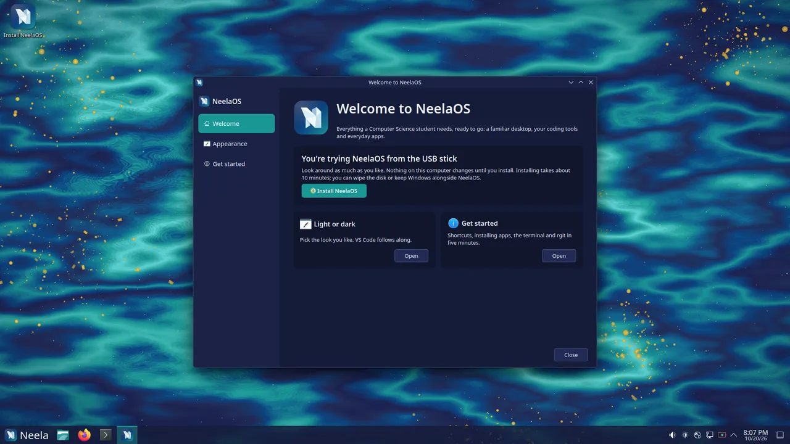
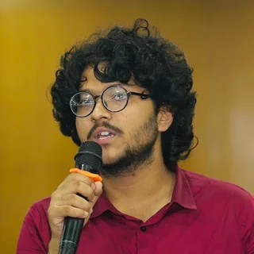

Feels like Windows
Start button, taskbar, desktop icons, Win key shortcuts and a Files app laid out like File Explorer.
A free, Windows-familiar Linux desktop for Computer Science students, with every coding tool ready from the very first boot. Built on Fedora 44 and KDE Plasma 6.
Free and open source3.9 GB ISOInstalls from a USB stick in about 10 minutes

The course says “install gcc”, “set up Python”, “use Git”. On Windows that means installers, PATH variables, MinGW, WSL and tutorials written for a different version of everything. Linux solves most of this, but it can feel unfamiliar to someone who has only ever used Windows.
NeelaOS closes that gap: a familiar Windows-like desktop paired with every development tool already installed.
Install NeelaOS and start learning to code the same day, without fighting your computer first.
Start button, taskbar, desktop icons, Win key shortcuts and a Files app laid out like File Explorer.
C/C++, Python, Java, Node.js, Git, VS Code, Podman and Ubuntu-style sudo apt install.
Automatic restore points before every update and once a day, like Windows System Restore.
Neela Dark and Light themes, six wallpapers, a custom boot splash, login screen and the Digital Dawn startup sound.
Each window below is a real part of NeelaOS. Go ahead and try them.
Taskbar with a Start button, pinned apps, system tray and clock. Desktop icons, double-click to open, minimize/maximize/close on the right, and the shortcuts you already know.
Click a shortcut to see it in action.
Compilers, languages and VS Code with C/C++, Python, Java, Jupyter and web extensions in NeelaOS colours. A Git-aware prompt, tldr and right-click “Create New” templates too.
Address bar, Quick access, Network and This PC, thumbnails for videos, PDFs and documents, zip support, and “Open Terminal Here” on right-click.
Most tutorials are written for Ubuntu. sudo apt install, update, upgrade, remove and search just work, even with Ubuntu package names.
sudo apt install build-essential
↳ Ubuntu package name understood
Installing compilers and build tools … done
✓ gcc, g++ and make are ready
rgit makes everyday Git one command: rgit push, rgit pull, rgit status, rgit undo.
rgit status
2 files changed: lab1.c, notes.md
rgit push "lab 1 done"
✓ Saved and uploaded
rgit undo
✓ Took back your last save
Open the Welcome app, tick what you need, click Install.
Restore points are taken before every update and once a day. Roll back without losing your personal files.
Now: an experiment broke something. Drag back to a restore point.
Neela Dark and Neela Light, a NeelaOS boot menu, splash, login screen and installer, and the Digital Dawn startup sound. VS Code follows your theme.
See the wallpapersBrave with a NeelaOS start page, LibreOffice with an Office-style ribbon that saves .docx, .xlsx and .pptx, plus fonts that match Calibri, Arial and Times New Roman.
A Fedora Remix using Fedora's packages and security updates.
Pick one and it becomes this website's wallpaper, just like on your NeelaOS desktop. Crystal is the default.
#222B56blue #0B4683teal #1A9695gold #D69510light gold #F2D678
Switch between Neela Dark and Neela Light in the Welcome app.
NeelaOS-x86_64.iso · 3.9 GBsudo apt update && sudo apt upgradeWho want a ready-to-code machine from the first boot.
Who want Linux without the learning cliff.
That need one consistent setup for everyone.
Who wants a clean, free, modern PC with no bloat.
Straight from the official release notes on GitHub.
OS, for the love of wind
A fresh look at your files, and a smoother desktop. Install it from Neela Store → Updates, or in the Terminal:
sudo apt update && sudo apt upgrade
Then log out and back in to finish.
---
Files is now powered by Nemo, a fast, familiar file manager that feels right at home if you're coming from Windows.
Already using NeelaOS? Your desktop shortcut, taskbar pin and Win + E switch to the new Files automatically at your next login. Nothing to set up.
---
Thanks for using NeelaOS. Made with 💙 by @ettisafxrup
Free, no account needed. Try it live from the USB first; nothing changes on your PC until you install.
The ISO (3.9 GB) and its .sha256 are hosted on MEGA. The button opens the ISO on MEGA and your browser downloads it from there.
76f710bad7f19b6da72fadec1e6e654eb2dfc11ccf5c3ea65fc53e062dd7e624Get NeelaOS-x86_64.iso (3.9 GB) and NeelaOS-x86_64.iso.sha256 with the Download button above.
Make sure the file arrived intact by comparing it with the .sha256 file:
Get-FileHash NeelaOS-x86_64.isosha256sum -c NeelaOS-x86_64.iso.sha256Use an 8 GB+ stick (it will be erased) with Rufus in DD image mode, Fedora Media Writer or balenaEtcher.
Restart, open the boot menu (usually F12 F11 F9 Esc or F2), pick the USB stick and choose Start NeelaOS.
NeelaOS runs live without changing anything. Click Install NeelaOS and Neela Setup asks for language, keyboard, disk and account. Install alongside Windows or use the whole disk, and keep the default Btrfs layout for restore points.
Remove the USB stick, log in and stay online while the Welcome app sets up VS Code, Brave and codecs. Then run the four update commands.
Open VS Code, the Terminal or the Welcome app and start building. Restore points have your back.
Once NeelaOS is installed and you’ve logged in, connect to the internet, open Terminal (Ctrl+Alt+T) and bring everything up to date.
sudo apt update
Checking for updates … done
sudo apt upgrade
Installing the latest updates … done
sudo apt upgrade neelaos
NeelaOS is up to date
reboot
Restarting into your updated NeelaOS …
sudo apt updateRefreshes the list of available updates.
sudo apt upgradeInstalls the newest Fedora, app and security updates.
sudo apt upgrade neelaosMakes sure the NeelaOS packages (apps, themes and settings) are the latest.
rebootRestarts the PC into the fully updated system.
That’s it, you’re good to go! NeelaOS is fully up to date. Later updates arrive in Neela Store, and a restore point is taken before each one.
Fedora updates and NeelaOS improvements arrive together. Install them from Neela Store → Updates, or in the Terminal:
sudo apt update && sudo apt upgradeA restore point is created automatically before every update, so you can always roll back.
.exe files..deb files can't be installed. Use Neela Store (Flatpak) or the app's .rpm version.An independent project, created and owned by Ettisaf Rup.
NeelaOS is a Fedora Remix: Fedora's packages and security updates, with NeelaOS's own look, apps, setup and defaults on top. Everything is free.
Neela means blue, the colour at the heart of the NeelaOS look, from navy and sea blue to teal.
NeelaOS is free to download and use: no licence, no subscription, no ads. The NeelaOS project, its name, logo, artwork and design system are created and strictly owned by Ettisaf Rup.

Creator & owner of NeelaOS
Ettisaf Rup designed, built and owns NeelaOS. He created it so Computer Science students can start learning to code on day one, instead of spending their first weeks fighting setup.
He also wrote rgit, the friendly Git companion that ships with NeelaOS.
Yes, completely: no licence, no subscription, no ads.
Download the NeelaOS-x86_64.iso file and its .sha256 checksum from the official GitHub Releases page at github.com/NeelaOS/NeelaOS/releases, or use the Download NeelaOS button on neelaos.github.io.
No. NeelaOS is Linux (a Fedora Remix built on Fedora 44 and KDE Plasma 6) designed to feel familiar to Windows users. Windows programs don't run natively.
Office in the browser works, and LibreOffice comes with an Office-style ribbon and saves to .docx, .xlsx and .pptx by default. The desktop version of Microsoft Office doesn't run.
Many Windows games run through Steam's Proton (available as a Dev pack). Games with anti-cheat systems usually don't.
Yes. Neela Setup can install NeelaOS alongside Windows, and you choose which one to start each time.
Most 64-bit Intel or AMD laptops and desktops from the last ten years run NeelaOS well. Try it live from the USB first; nothing changes on your PC until you install.
Open Neela Store → Updates, or run sudo apt update && sudo apt upgrade in the Terminal. Fedora, NeelaOS, Brave and VS Code updates arrive together, and a restore point is taken before every update.
Open Restore Points and go back to a moment before the problem, like Windows System Restore. Your personal files are kept.
No. Use Neela Store (Flatpak) or the app's .rpm version instead. Ubuntu-style commands like sudo apt install build-essential do work.
NeelaOS uses Fedora's packages, security updates and signed boot chain, so Secure Boot works out of the box, and it only installs software from official sources.
Neela means blue, the colour at the heart of the NeelaOS look, from navy and sea blue to teal.
A familiar desktop and a complete coding setup in about ten minutes. Free, for everyone.
Download NeelaOS